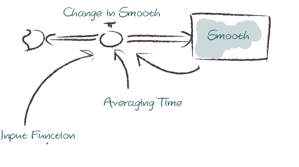
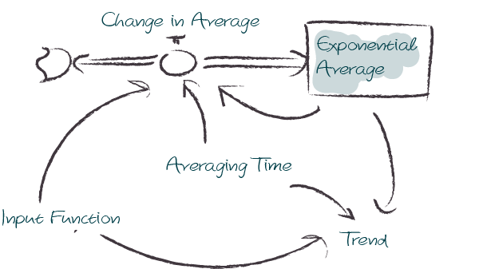

from BPTK_Py import Model
from BPTK_Py import sd_functions as sd
from BPTK_Py.bptk import bptk
import numpy as np
bptk=bptk()SD DSL Functions
Overview of the SD DSL functions that are part of the BPTK-Py business simulation framework.
SD DSL Functions
This document illustrates how to use the operators for the SD DSL. To use the operators, you need to import the sd_functions, in addition to importing the Model class.
IF / THEN / ELSE / AND /NOT / OR
It is possible to write up if clauses. We even support NOT and AND / OR operators.
Please note that these function names begin with a capital letter. This is because the actual words if, and, or etc. are protected in Python and cannot / should not be overwritten.
An if clause requires 3 arguments: If ( <condition> , <then>, <else>)
condition: Must be a boolean expression, e.g. sd.time() > 1 is true iff the simulation time is larger than 1 then : Any expression that returns a float value if the condition is true else : Any expression that returns a float value if the condition is false
A simple if clause may look like this:
model = Model(starttime=0.0,stoptime=10.0,dt=0.1,name='if')
converter = model.converter("converter")
converter.equation = sd.If( sd.time()>5, 10, 5 )
converter.plot()You see that its value is 5 until t reaches 6.
You can also add and / or / not conditions easily:
Signature: And(<condition1>, <condition2>) : Logical and between 2 conditions Or(<condition1>, <condition2>) : Logical or between 2 conditions Not(<condition>) : Logical not: True if condition is False
Each condition within the operators has to return a boolean value. Nesting of the operators is easily possible!
converter.equation = sd.If( sd.And(sd.time()>5,sd.time()>10), 10, 5 ) # 5 (else case) as long as t <= 10, then 10
converter.equation = sd.If( sd.Or( sd.And(sd.time()>5,sd.time()>10), True), 10, 5 ) # Always 10 (then condition, because Or always evaluates to True)
converter.plot()ABS Function
The ABSfunction returns the absolute value of its input.
Signature: abs(input)
input may be any model element.
model = Model(starttime=0.0,stoptime=10.0,dt=0.1,name='abs')
input_converter = model.converter("input_converter")
input_converter.equation=sd.time()-5
abs_converter = model.converter("abs_converter")
abs_converter.equation = sd.abs(input_converter)
bptk.register_model(model)
bptk.plot_scenarios(scenario_managers=["smAbs"],scenarios=["base"],equations=["input_converter","abs_converter"])DELAY Function
The DELAY function returns a delayed value of input, using a fixed lag time of delay duration, and an optional initial value initial for the delay. If you don’t specify an initial value initial, DELAY assumes the value to be the initial value of input. If you specify delay duration as a variable, the DELAY function uses the initial value for its fixed lag time
Signature: delay(model, input_function, delay_duration, initial_value)
input_function must be a model element delay_duration and initial_value must be floats or model elements.
model = Model(starttime=0.0,stoptime=10.0,dt=0.5,name='delay')
input_function = model.converter("input_function")
input_function.equation=sd.time()
delayed_input_1 = model.converter("delayed_input_1")
delayed_input_2 = model.converter("delayed_input_2")
delayed_input_3 = model.converter("delayed_input_3")
delayed_input_1.equation = sd.delay(model,input_function, 1.0,1.0)
delayed_input_2.equation = sd.delay(model,input_function, 2.0,0.0)
delayed_input_3.equation = sd.delay(model,input_function, 2.5,0.5)
bptk.register_model(model)
bptk.plot_scenarios(
scenario_managers=["smDelay"],
scenarios=["base"],
equations=["input_function","delayed_input_1","delayed_input_2","delayed_input_3"])DT Function
The DT function returns the models dt..
Signature: dt(model)
model = Model(starttime=5,stoptime=12,dt=0.25,name='dt')
dt = model.converter("dt")
dt.equation = sd.dt(model)
dt.plot()EXP Function
The exp function returns the exponential value of the input.
Signature: exp(element)
element can be any model element (stock, flow, converter, constant)
model = Model(starttime=0,stoptime=10,dt=0.1,name='exp')
growth_rate = model.constant("growth_rate")
growth_rate.equation=np.log(2)
exp = model.converter("exp")
exp.equation = sd.exp(growth_rate*sd.time())
exp.plot()MAX Function
The max function always chooses the larger of its two input values.
Signature: max(element, element)
element can be any model element (stock, flow, converter, constant)
model = Model(starttime=0.0,stoptime=10.0,dt=1.0,name='max')a = model.converter("a")a.equation = 5.0+sd.step(5.0, 5.0)a.plot()b = model.converter("b")b.equation= 10.0 - sd.step(5.0, 5.0)b.plot()c = model.converter("c")c.equation=sd.max(a,b)bptk.register_model(model)
bptk.plot_scenarios(scenario_managers=["smMax"],scenarios=["base"],equations=["a","b","c"])MIN Function
The min function always chooses the smaller of its two input values.
Signature: min(element, element)
element can be any model element (stock, flow, converter, constant)
model = Model(starttime=0,stoptime=10,dt=1,name='min')
a = model.converter("a")
a.equation = 5.0+sd.step(5.0, 5.0)
b = model.converter("b")
b.equation= 10.0 - sd.step(5.0, 5.0)
c = model.converter("c")
c.equation = sd.min(a,b)
bptk.register_model(model)
bptk.plot_scenarios(scenario_managers=["smMin"],scenarios=["base"],equations=["a","b","c"])PULSE Function
The PULSE function generates a pulse input of a specified size (volume). When using the PULSE builtin, you have the option of setting the time at which the PULSE will first fire (first pulse), as well as the interval between subsequent PULSEs. Each time that it fires a pulse, the framework pulses the specified volume over a period of one time step (DT). Thus, the instantaneous value taken on by the PULSE function is volume/DT.
Signature: pulse(model, volume, first_pulse=0, interval=0)
Setting interval to 0 yields a single pulse that doesn’t repeat
volume can be either a variable or a constant, first_pulse and interval must be constants.
model = Model(starttime=0.0,stoptime=10.0,dt=0.25,name='pulse')
stock = model.stock("stock")
stock.initial_value=0.0
flow = model.flow("flow")
flow.equation=sd.pulse(model,10.0,2.0,2.0)
stock.equation = flow
bptk.register_model(model)
bptk.plot_scenarios(scenario_managers=["smPulse"],scenarios=["base"],equations=["stock","flow"])SMOOTH Function
The SMOOTH function calculates the exponential average of the input, given the input function, an initial value and an averaging time.
Signature: smooth(model, input_function, averaging_time, initial_value)
model: The model you are writing equations for
input_function: any model element
averaging_time: any model element
initial_value: a floating point value or constant
The SMOOTH operator is a shorthand for the following stock and flow structure and equations:

model = Model(starttime=1.0,stoptime=10.0,dt=0.1,name='smooth')
input_function = model.converter("input_function")
input_function.equation=sd.step(10.0,3.0)
smooth = model.converter("smooth")
smooth.equation=sd.smooth(model, input_function,2.0,0.0)
bptk.register_model(model)
bptk.plot_scenarios(scenario_managers=["smSmooth"],scenarios=["base"],equations=["input_function","smooth"])STARTTIME Function
The STARTTIME function returns the models starttime.
Signature: starttime(model)
model = Model(starttime=5,stoptime=12,dt=1,name='starttime')
starttime = model.converter("starttime")
starttime.equation = sd.starttime(model)
starttime.plot()STOPTIME Function
The STOPTIME function returns the models starttime.
Signature: stoptime(model)
model = Model(starttime=5,stoptime=12,dt=1,name='stoptime')
stoptime = model.converter("stoptime")
stoptime.equation = sd.stoptime(model)
stoptime.plot()STEP Function
The STEP function generates a change of specified height, which occurs at a specified time.
Signature: step(height, timestep)
input_function: any model element or a floating point number
averaging_time: any model element or a floating point numnber
initial_value: a floating point value or a constant
model = Model(starttime=1,stoptime=10,dt=1,name='step')
step = model.converter("step")
step.equation=sd.step(10.0,5.0)step.plot()TIME Function
The time function returns the current simulation time.
Signature: time()
model = Model(starttime=0,stoptime=10,dt=1,name='time')
stock = model.stock("stock")
stock.initial_value=0.0
inflow = model.flow("inflow")
inflow.equation = sd.time()
stock.equation = inflow
inflow.plot()TREND Function
The TREND function calculates the trend in the input, given the input, an initial value and an averaging time. The TREND is defined to be the fractional change in input compared to the exponential average of input per averaging time. The TREND function thus estimates the growth rate of is input function.
Signature: trend(model, input_function, averaging_time, initial_value)
model: The model you are writing equations for
input_function: any model element
averaging_time: any model element
initial_value: a floating point value or constant
The TREND operator is a shorthand for the following stock and flow structure and equations:

model = Model(starttime=1,stoptime=10,dt=0.01,name='trend')
growth_rate = model.constant("growth_rate")
growth_rate.equation=np.log(2)
input_function = model.converter("input_function")
input_function.equation = sd.exp(growth_rate*sd.time())
trend = model.converter("trend")
trend.equation = sd.trend(model,input_function,1.0,2/(1+np.log(2))) As an example, we set up a small model that has an input function that doubles every timestep - i.e the exponential growth rate is log 2 ≈ 0.69 and then apply the trend function to estimate the growth rate.
Here is a plot of the growth rate, which is constant:
growth_rate.plot()This gives an input function which doubles in value on every timestep:
input_function.plot()As expexted, the plot of the trend function converges to the input growth rate:
trend.plot()ROUND Function
This function rounds any input to a specified number of digits.
Signature: round(expression, digits)
expression can be any float input by any expression. digits must be an int value
A minimal example that rounds random numbers between 0 and 2 to 0 digits (int number):
model = Model(starttime=0.0,stoptime=10.0,dt=0.25,name='round')
flow = model.flow("round")
flow.equation = sd.round( sd.random(0, 2), 0 )
flow.plot()SQRT
Computes the Square root of an input expression.
Signature: sqrt(expression)
expression can be any element that returns a float value.
Simple Example:
m= Model(starttime=0,stoptime=10,dt=1)
f = m.flow(name="sqrt")
val = sd.time()
f.equation = sd.sqrt(val)
f.plot()NAN / INF / PI
sd.nan() returns a NAN value, sd.Inf() gives you the infinity value, sd.pi() returns the number pi.
SIN / TAN / COS and ARCCOS / ARCSIN / ARCTAN
The SD DSl supports all trigonometric that you are also used to from other SD simulation / modelling tools
Use sd.sin(x) / sd.cos(x) / sd.tan(x) for sinus, cosinus or tangent of x (radians) and sd.arcsin(x) / sd.arctan(x) / sd.arccos(x) for the respective arctan / arccos and arcsine operators.
Let’s easily plot sin / cos and tan for the current simulation time:
m= Model(starttime=0,stoptime=10,dt=0.1)
sin = m.flow(name="sin")
tan = m.flow(name="tan")
cos = m.flow(name="cos")
x = sd.time()
sin.equation = sd.sin(x)
tan.equation = sd.tan(x)
cos.equation = sd.cos(x)
sin.plot()
tan.plot()
cos.plot()SINWAVE and COSWAVE function
SINWAVE returns a time-dependent sine wave, with the specified amplitude and period. To generate the sine wave, the SINWAVE builtin uses the absolute value of the amplitude you specify. To produce meaningful wave results, choose a DT that’s significantly smaller than the period of the wave. A DT equal to a quarter of the period gives triangle waves. A smaller DT gives results which better approximate a continuous curve.
COSWAVE generates a time-dependent cosine wave. It uses the same arguments
Signature: sinwave(amplitude,period)
amplitude : Amplitude of the sine wave period : Period of the sine wave
Example:
m= Model(starttime=0,stoptime=10,dt=0.1)
f = m.flow(name="sinwave")
g = m.flow("coswave")
amplitude = 10
period = 5
f.equation = sd.sinwave(amplitude, period)
g.equation = sd.coswave(amplitude, period)
f.plot()
g.plot()BETA Function
The BETA operator generates a series of random numbers that conforms to a beta distribution defined by two shape arguments, alpha and beta.
Example:
m= Model(starttime=0,stoptime=10,dt=0.1)
f = m.flow(name="beta")
alpha = 1
beta = 2
f.equation = sd.beta(alpha, beta)
f.plot()BINOMIAL
This operator generates a series of random numbers from a discrete probability distribution of the number of successes in a sequence of trials with a given success probability. The success probability should be a number between 0 and 1.
Arguments are number of trials (n) and success probability (p).
A quick example:
m= Model(starttime=0,stoptime=10,dt=0.1)
f = m.flow(name="binomial")
n = 100
p = 0.1
f.equation = sd.binomial(n, p)
f.plot()COMBINATIONS
The COMBINATIONS operator calculates the number of r-element subsets (or r-combinations) of an n-element set without repetition.
Arguments n and r must follow n >= r >= 0.
Example with time as n:
m= Model(starttime=3,stoptime=10,dt=1)
f = m.flow(name="combinations")
n = sd.time()
r = 1
f.equation = sd.combinations(n,r)
f.plot()EXPRND Function
This operator generates a series of exponentially distributed random numbers with a given mean.
Example:
m= Model(starttime=0,stoptime=10,dt=0.1)
f = m.flow(name="exprnd")
mean = sd.time()
f.equation = sd.exprnd(mean)
f.plot()FACTORIAL Function
The FACTORIAL function calculates the factorial of the single argument n (traditionally noted as n!). n must be an integer value, decimal values are not allowed.
Example:
m= Model(starttime=0,stoptime=10,dt=0.1)
f = m.flow(name="factorial")
n = 5
f.equation = sd.factorial(n)
f.plot()GAMMA Function
The GAMMA builtin generates a series of random numbers that conforms to a gamma distribution with the specified shape and scale. If unspecified, scale uses the value 1.0
Example:
m= Model(starttime=0,stoptime=10,dt=0.1)
f = m.flow(name="gamma")
shape = 10
scale = sd.time()
f.equation = sd.gamma(shape, scale)
f.plot()GAMMALN Function
The GAMMALN operator returns the natural log of the GAMMA function, given input n. The GAMMA function is a continuous version of the FACTORIAL builtin, with GAMMA(n) the same as FACTORIAL(n-1).
Only argument is n
m= Model(starttime=0,stoptime=10,dt=0.1)
f = m.flow(name="gammaln")
n = sd.time()
f.equation = sd.gammaln(n)
f.plot()GEOMETRIC Function
The GEOMETRIC operator generates a series of random numbers from a discrete probability distribution of the number of trials before the first success with a given success probability (p).
p is the only parameter. It should be any value between 0 and 1.
Example:
m= Model(starttime=0,stoptime=10,dt=0.1)
f = m.flow(name="geometric")
p = 0.1
f.equation = sd.geometric(p)
f.plot()INVNORM Function
The INVNORM operator calculates the inverse of the NORMALCDF function (see below).
Parameter is the probability p (any value between 0 and 1).
Example:
m= Model(starttime=-0.5,stoptime=1,dt=0.1)
f = m.flow(name="invnorm")
p = sd.time()
f.equation = sd.invnorm(p)
f.plot()LOGISTIC Function
The LOGISTIC operator generates a series of random numbers that conforms to a logistic distribution with a specified mean and scale.
Example:
m= Model(starttime=-1,stoptime=10,dt=0.1)
f = m.flow(name="logistic")
mean = 0
scale = 1
f.equation = sd.logistic(mean, scale)
f.plot()LOGNORMAL Function
The LOGNORMAL operator generates a series of random numbers that conform to a Log-Normal distribution (that is, the log of the independent variable follows a normal distribution) with a specified mean and stddev (standard deviation). LOGNORMAL samples a new random number in each iteration of a simulation.
Arguments are mean and standard deviation
Example:
m= Model(starttime=0,stoptime=10,dt=0.1)
f = m.flow(name="lognormal")
mean = 0
stdev = 1
f.equation = sd.lognormal(mean, stdev)
f.plot()MONTECARLO Function
The MONTECARLO operator randomly generates a series of zeros and ones from a Bernoulli distribution based on the probability you’ve provided. The probability is the percentage probability of an event happening per unit of simulation time. The probability value can be either a variable or a constant, but should evaluate to a number between 0 and 100.
MONTECARLO is equivalent to the following logic:
IF (RANDOM(0,100,
Example:
m= Model(starttime=0,stoptime=10,dt=0.1)
f = m.flow(name="montecarlo")
probability = 50
f.equation = sd.montecarlo(probability)
f.plot()NORMAL Function
The NORMAL operator generates a series of normally distributed random numbers with a specified mean and stddev (standard deviation).
Arguments are mean and the standard deviation of the underlying normal distribution.
Example:
m= Model(starttime=0,stoptime=10,dt=1)
f = m.flow(name="normal")
mean = 0
stdev = 1
f.equation = sd.normal(mean, stdev)
f.plot()NORMALCDF Function
The NORMALCDF operator calculates the cumulative Normal distribution function between the specified z-scores, or, when the mean and stddev (standard deviation) are given, between two data values.
Arguments are the left and right boundaries and optionally mean and stddev. If not given, mean will be set to 0, stddev to 1.
A really simple example:
m= Model(starttime=-4,stoptime=4,dt=0.1)
f = m.flow(name="normalCDF")
left = -4
right = sd.time()
mean = 0
stddev = 1
f.equation = sd.normalcdf(left, right, mean, stddev)
f.plot()PARETO Function
The PARETO operator generates a series of random numbers that conforms to a distribution whose log is exponentially distributed with a specified shape and scale
Arguments are shape and scale.
Example:
m= Model(starttime=1,stoptime=10,dt=0.1)
f = m.flow(name="pareto")
shape = 1
scale = 1
f.equation = sd.pareto(shape, scale)
f.plot()PERMUTATIONS
The PERMUTATIONS operator calculates the number of permutations of an n-element set with r-element subsets.
Arguments are n and r. Note that both numbers should be integer values and must follow n >= r >= 0.
Example:
m= Model(starttime=1,stoptime=10,dt=0.1)
f = m.flow(name="permutations")
n = 7.0
r = 3
f.equation = sd.permutations(n, r)
f.plot()POISSON Function
The POISSON operator generates a series of random numbers that conform to a Poisson distribution. The mean value of the output is mu * DT.
Only argument is mu, a float or integer number or any operator that returns a number.
Example (with an increasing mu expressed as the current simulation time):
m= Model(starttime=1,stoptime=10,dt=0.1)
f = m.flow(name="poisson")
mu = sd.time()
f.equation = sd.poisson(mu)
f.plot()RANDOM / UNIFORM Function
RANDOM and UNIFORM both draw a random number between a minimum and maximum value that conforms to a uniform distribution. For compatibility to modelling practices, we included both into the SD DSL (just as the Stella Architect builtins).
Arguments are the min_value and max_value between which the random number should lie. If not given, the random number is between 0 and 1.
Simple example where the number always lies between DT and the current simulation time:
m= Model(starttime=1,stoptime=10,dt=0.1)
f = m.flow(name="uniform / random")
min_value = 0.1
max_value = sd.time()
f.equation = sd.random(min_value, max_value)
f.plot()TRIANGULAR Function
The TRIANGULAR operator generates a series of random numbers that conforms to a triangular distribution with a specified lower bound, mode, and upper bound.
A simple example with the current simulation time as upper bound:
m= Model(starttime=1,stoptime=10,dt=0.1)
f = m.flow(name="triangular")
lower_bound = 0
mode = 1
upper_bound = sd.time()
f.equation = sd.triangular(lower_bound, mode, upper_bound)
f.plot()WEIBULL Function
The WEIBULL operator generates a series of random numbers that conforms to a Weibull distribution with the specified shape and scale.
Let’s create a quick example with scale set to the current simulation time:
m= Model(starttime=1,stoptime=10,dt=0.1)
f = m.flow(name="weibull")
shape = 1
scale = sd.time()
f.equation = sd.weibull(shape, scale)
f.plot()